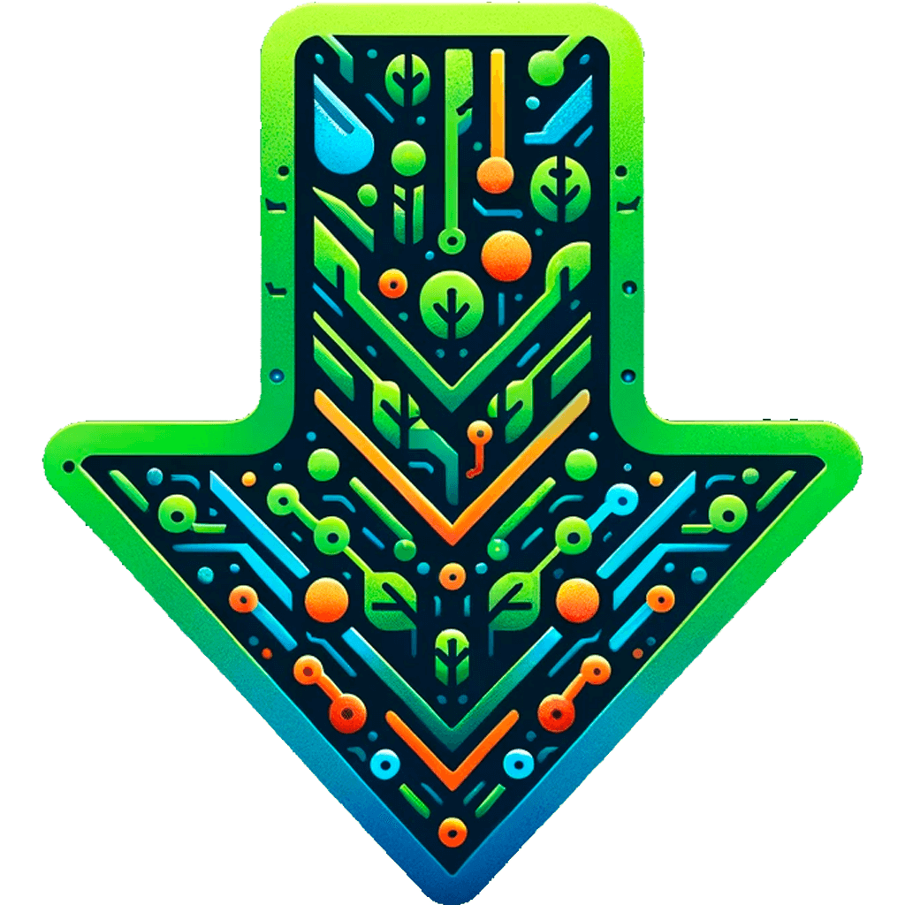
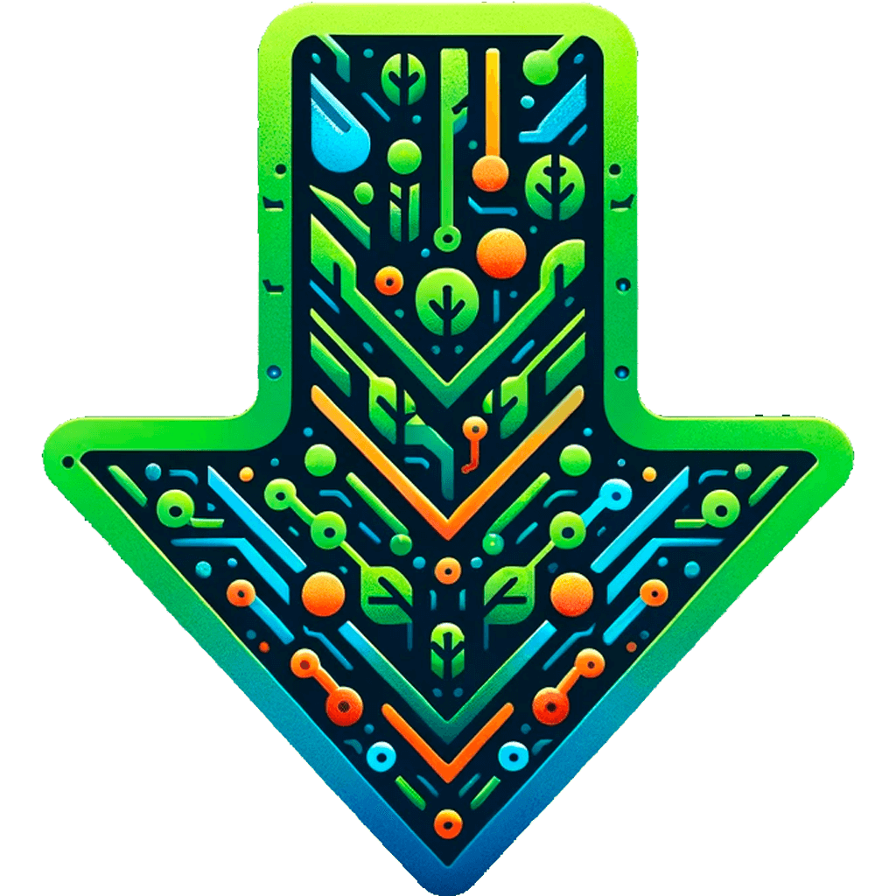

Nastruire


Nastruire est né d'une collaboration entre amis passionnés d'informatique, initié lors d'un concours
lancé en
février 2022. C’est après trois mois de développement, qu’un jeu vidéo visant à sensibiliser à la
protection
de l'environnement, en mettant l'accent sur l'éducation des jeunes est né.
Ce sont donc deux cartes qui seront proposées aux joueurs afin de collecter 50 déchets. A chaque
ramassage,
des informations sont donnée sur la décomposition et l’impact environnemental de chacun de ces
déchets.
Outre la sensibilisation sur le recyclage, Nastruire propose également des cours sur l’informatique en
lien
avec la passion de notre équipe. Internet devenant de plus en plus vaste, dangereux et difficile à
comprendre, il est important d’avoir les bases pour s’initier dans ce domaine.